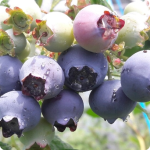

ナポリ農園はヒノキの森で素足体験や山林浴、フィトンチッド足浴、フィトンチッド肌ケアなど、様々な体験ができます。
特にメインプログラムであるヒノキの素足治癒体験は、ヒノキのおがくずをチモゲン酵素と自然発酵させて敷いた酵素の道を裸足で歩く体験で、人体の免疫力を高める効果が得られます。
毎朝4時に酵素の道を再整備するだけでなく、最大25歳の若いヒノキで造成してフィトンチッドが最も多く放出されるように管理します。
ホームページ :
http://www.naporyair.com/skin_mw1/
住所 : 慶尚南道統営市山陽邑永雲里765-21
電話番号 : 055-641-7005
鬱蒼とした原始林の美しい四季が楽しめるフォレストリソームは、自然を損なわない方法で開発された「エコリゾート」です。
フォレストリソームは自然地形と植生をそのまま保存し、環境にやさしい資材を使用して自然と人間が共に休息を享受できるように設計され、団地内では電線や自動車を見ることができず、
四季折々の美しい野生花やリス、キタリスに出会うことができます。 また、フォレストリソームでは施設内にあるウェルネススタジオの無有空間で展示を観覧したり、
居心地の良いイーグルドームでセルフ星座や夜間撮影に挑戦することもできます。
ホームページ :
https://www.resom.co.kr/forest/main/main.asp
住所 : 忠清北道堤川市白雲面金鳳路365
電話番号 : 1600-0060
抱川アートバレーは廃採石場をきれいな湖と多様な施設で飾って観光地化した空間で、軽く散歩しながら回れば1~2時間ほどヒーリングが楽しめ、様々な体験活動にも参加できます。
ホームページ :
https://artvalley.pocheon.go.kr/
住所 : 京畿道抱川市新北面アートバレー路234
電話番号 : 1668-1035

ポルゲ協同組合は帰農帰村人からなる協同組合で、有機ブルーベリー農場やミカン農場、漢拏山野生花を使った蜂蜜を養蜂しています。
農場で農活体験(ブルーベリー、みかん狩り)を行います。 子供と一緒に家族連れで参加もできます。
ホームページ :
http://polgae.com/
住所 : 済州西帰浦市南原邑ウォンニム路473
電話番号 : 0507-1481-0141